Backtracking
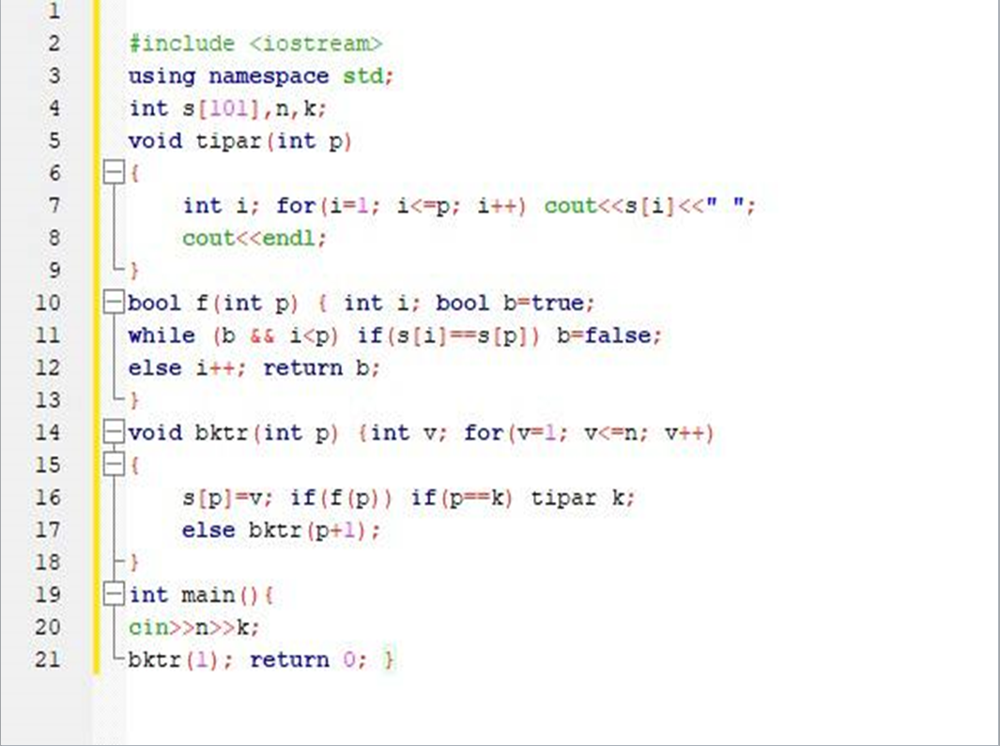
De obținut din {1,2,3,4} toate aranjamentele posibile
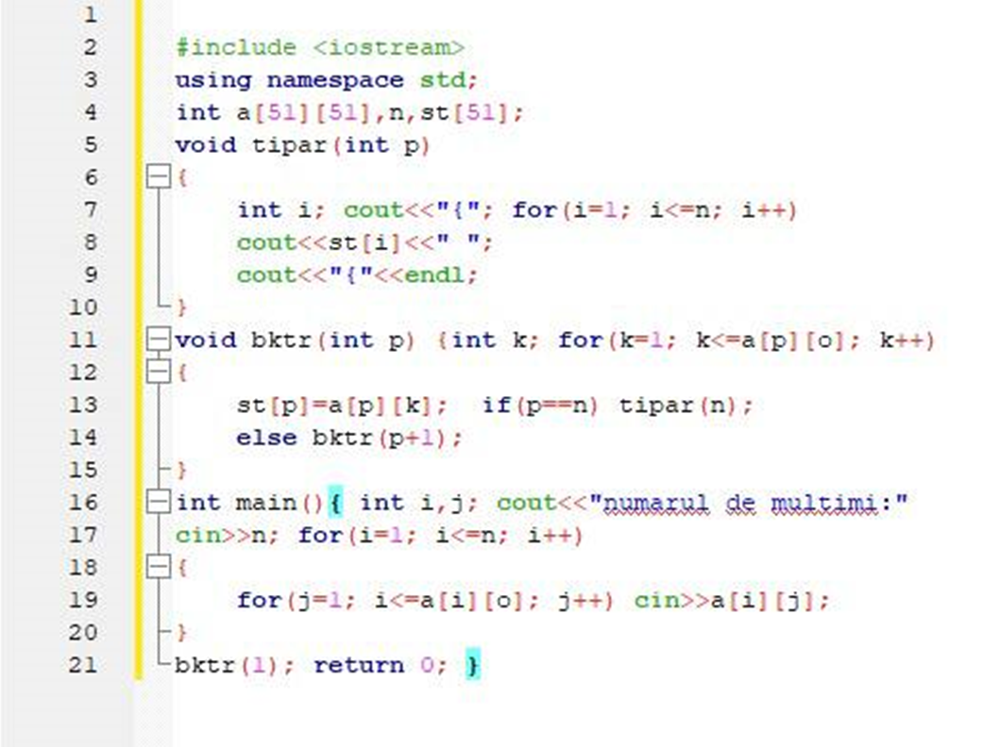
Se dau n mulțimi, de afișat produsul cartezian
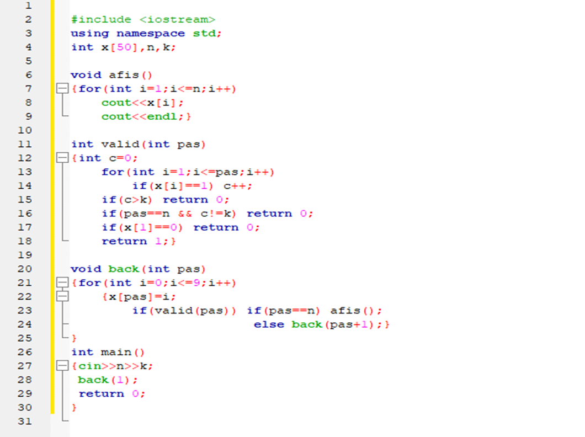
Se citesc doua numere naturale n si k. Generati si afisati toate toate numerele naturale formate din n cifre care contin exact k cifre de 1.
Greedy
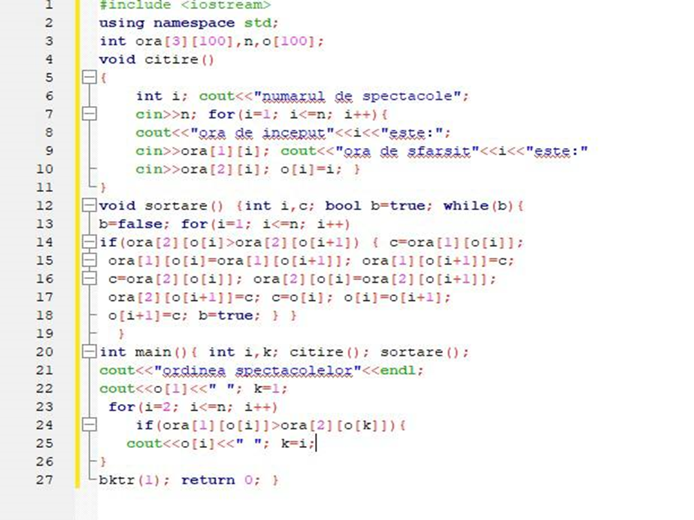
Managerul unui festival trebuie sa selecteze spectacole ce pot fi jucate in singura sala. Stiind ca are n spectacole si pentru fiecare spectacol i-a fost anuntat intervalul in care se poate desfasura [st, sf], scrieti un program care sa permita spectatorilor vizionarea unui numar cat mai mare de spectacole.
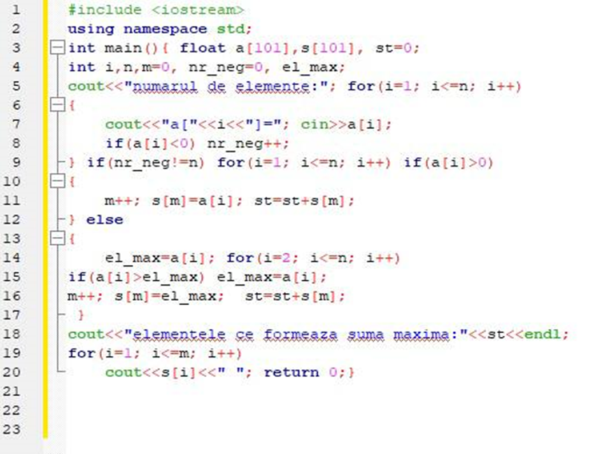
Sa se determine o submultime S , astfel incat suma elementelor ei sa fie maxima
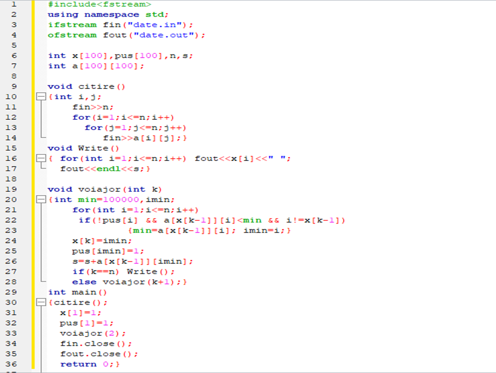
Problema comis-voiajorului
Recursie
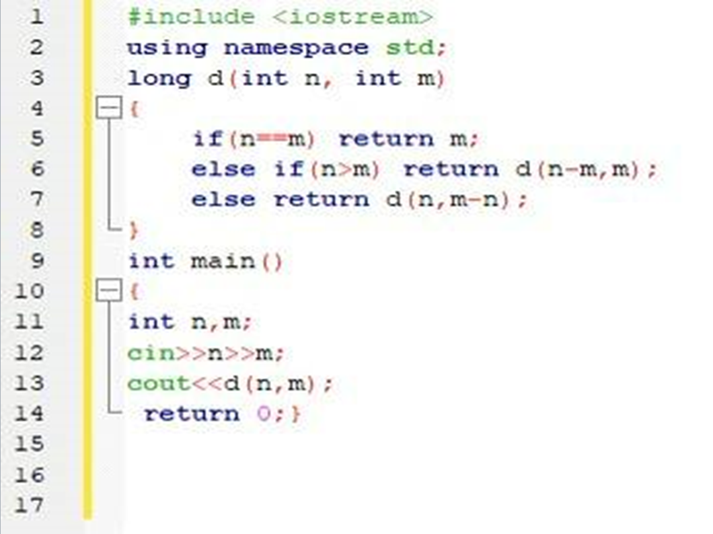
De afisat la ecran cel mai mare divizor comun a doua numere.
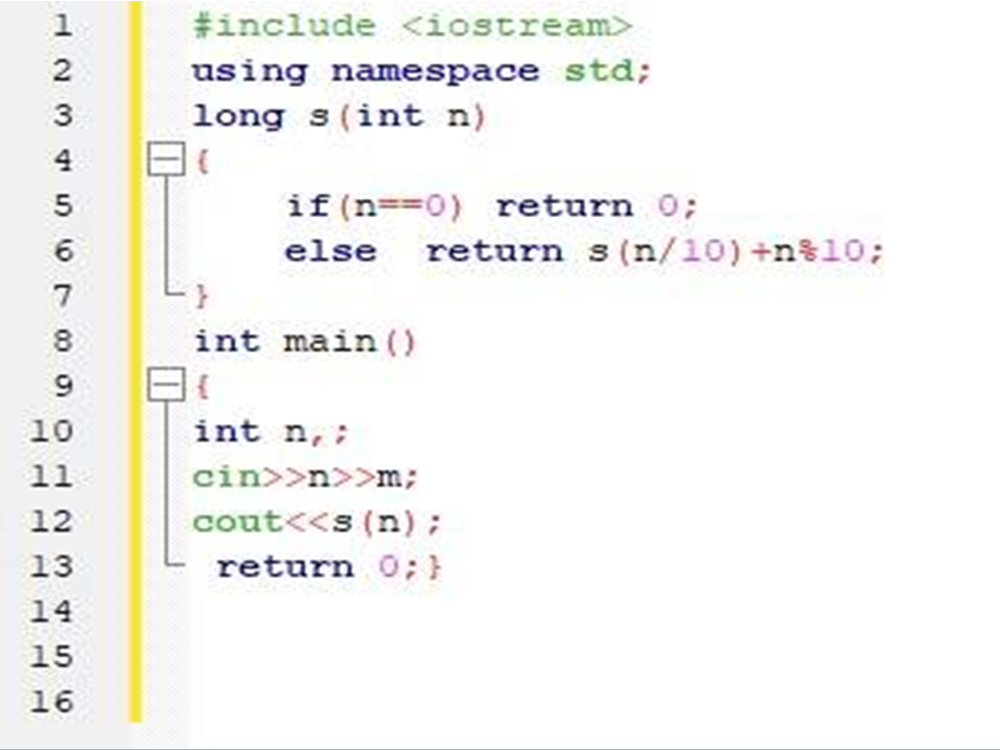
De afișat la ecran suma cifrelor unui număr.
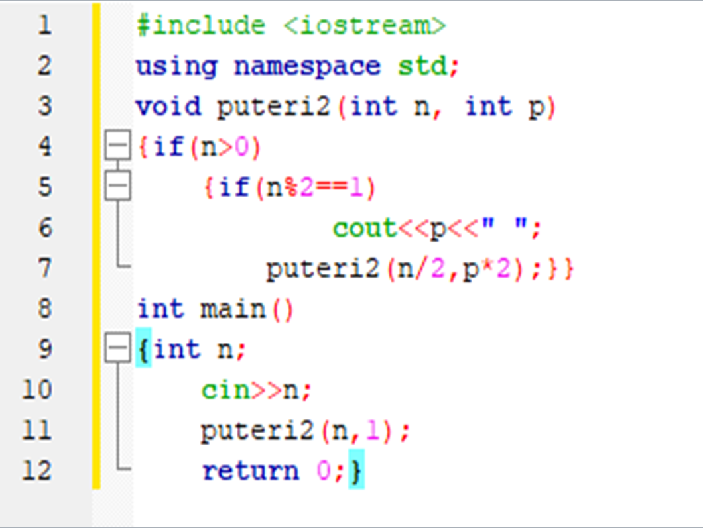
Se citeste un numar natural n. Sa se descompuna ca suma de puteri crescatoare ale lui 2. Se vor folosi doar prelucrari/calcule realizate cu ajutorul functiilor implementate recursiv.
Triere
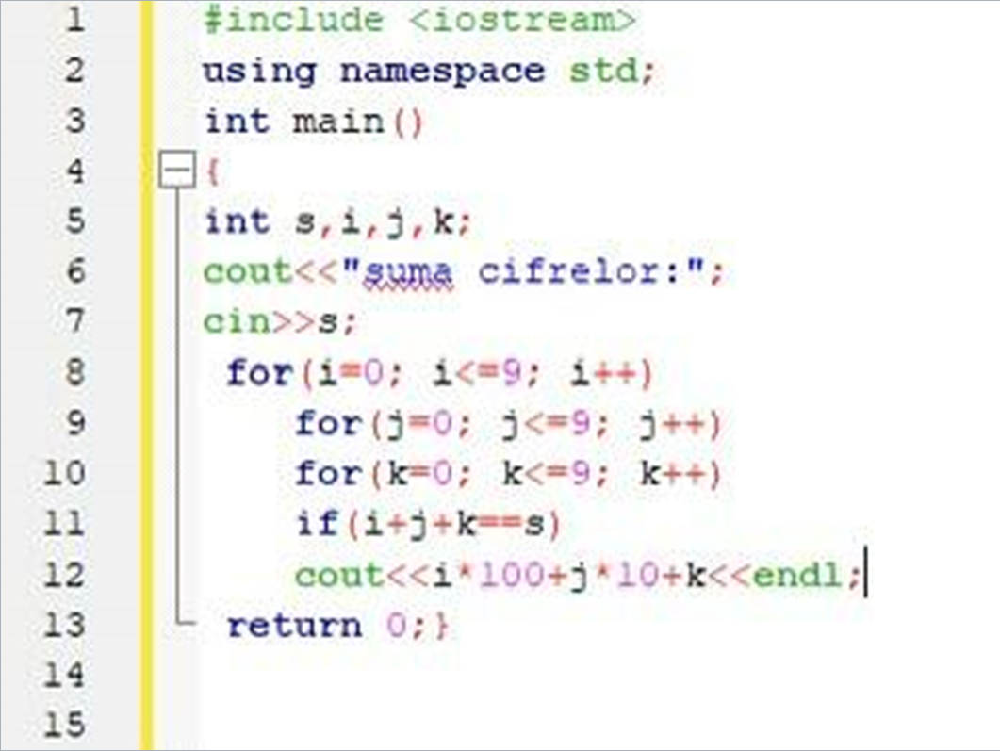
De afisat la ecran toate numerele formate din maxim 3 cifre, la care suma numerelor este un numar dat s.
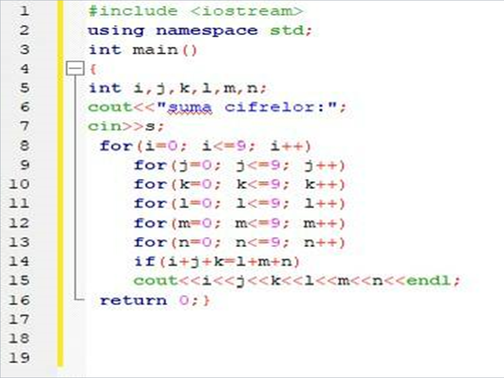
De afisat la ecran toate numerele norocoase care au 6 cifre
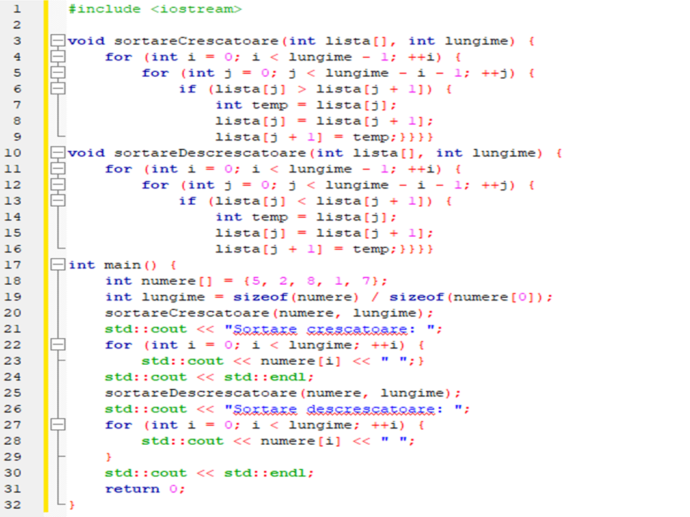
Să permită utilizatorului să introducă o listă de numere întregi și să ofere opțiunea de a le sorta în ordine crescătoare sau descrescătoare.